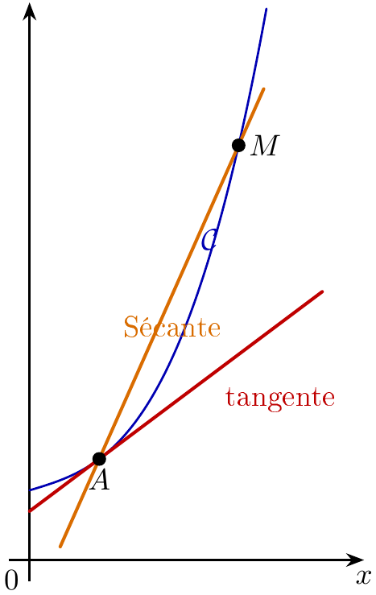
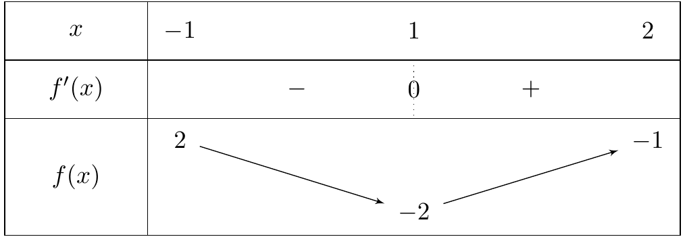
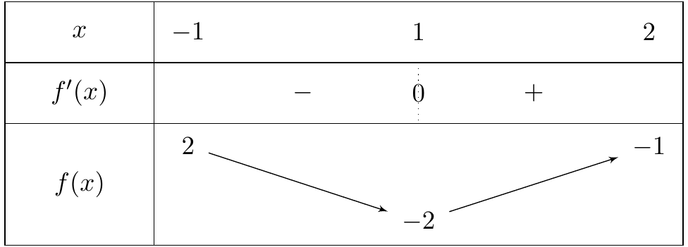

Chapitre VI : Dérivation
Première STMG · Chapitre 6 — Dérivation · cours de Frederik de Peyrelongue
I. Nombre dérivé et tangente
On appelle sécante à la courbe $\mathcal{C}$ la droite passant par le point $A$ et par un autre point $M$ de la courbe $\mathcal{C}$.
Lorsque $M$ se rapproche du point $A$, la position limite des sécantes $(AM)$ est une droite : cette droite est appelée tangente à la courbe au point $A$.
Le coefficient directeur de la sécante correspond au taux d'accroissement $\dfrac{f(x_{M})-f(x_{A})}{x_{M}-x_{A}}$ ; et la limite de ce taux d'accroissement, lorsque le point $M$ se rapproche du point $A$, correspond au coefficient directeur de la tangente.

On dit que $f$ est dérivable en « $a$ » si le taux d'accroissement $\dfrac{f(a+h)-f(a)}{h}$ tend vers un nombre réel lorsque $h$ tend vers $0$. Ce nombre est appelé nombre dérivé de $f$ en $a$ et est noté $f'(a)$. (Ce nombre est le coefficient directeur de la tangente.)
On écrit alors
II. Tangente à une courbe en un point
Soit $a$ un réel et $f$ une fonction dérivable en $a$. On appelle tangente à la courbe représentative de $f$ au point $A$ d'abscisse $a$ la droite passant par le point de coordonnées $\bigl(a\,;f(a)\bigr)$ et de coefficient directeur $f'(a)$.

L'équation de la droite tangente à $\mathcal{C}$ au point $A$ est :
Soit $f$ une fonction et $\mathcal{C}$ sa courbe représentative dans un repère. On sait que $A(2\,;5)$ est un point de $\mathcal{C}$ et que $f$ est dérivable en $2$ avec $f'(2)=4$.
La tangente à la courbe $\mathcal{C}$ en $A$ est la droite $T$ d'équation :
III. Dérivation sur un intervalle – fonction dérivée
3.1 Définition
Soit $f$ une fonction définie sur un intervalle $I$ de $\R$. Si, pour tout $a$ de $I$, $f$ est dérivable en $a$, on dit que $f$ est dérivable sur $I$. La fonction qui, à tout $x$ de $I$, associe le nombre dérivé de $f$ sur $x$, est appelée fonction dérivée de $f$ et est notée $f'$.
III.2 Exemple : fonction dérivée de la fonction affine $f(x)=mx+p$
Soit $x$ un nombre réel quelconque.
Le taux d'accroissement entre $x$ et $x+h$ est
Le taux d'accroissement de la fonction affine entre $x$ et $x+h$ est égal au coefficient directeur « $m$ » pour toutes les valeurs de $h$, et donc notamment quand $h$ devient très petit : il est constant, égal à « $m$ ».
Donc
Exemple : $f(x)=5x+3$, alors $f'(x)=5$ pour tout nombre réel $x$.
3.2 Fonctions dérivées des fonctions usuelles
| fonction définie et dérivable sur : | fonction $f$ définie par : | fonction dérivée $f'$ définie par : |
| $\R$ | $f(x)=k$ | $f'(x)=0$ |
| $\R$ | $f(x)=ax+b$ | $a$ |
| $\R$ | $f(x)=x^{n}$ ($n$ entier $n\geqslant 1$) | $f'(x)=nx^{n-1}$ |
Exemple :
IV. Opérations sur les fonctions dérivables
$u$ et $v$ sont deux fonctions dérivables sur un intervalle $I$.
| fonction $f$ définie par : | fonction dérivée $f'$ : | |
| Produit d'une fonction par un réel $k$ | $ku$ | $ku'$ |
| Somme | $u+v$ | $u'+v'$ |
Soit $u$ une fonction dérivable sur un même intervalle $I$ de $\R$, et $k$ une constante : alors $f=k\,u$ est dérivable sur $I$ et
Soit $f$ la fonction définie sur $\R$ par $f(x)=3x^{7}$.
La fonction $f=k\,u$ avec $u(x)=x^{7}$ et $k=3$.
La fonction $u$ est dérivable sur $\R$, avec $u'(x)=7x^{6}$.
Donc $f$ est dérivable et $f'=ku'$, donc
$f(x)=x^{2}+5x+3$ :
Donc $f'=u'+v'$ et
$g(x)=x^{3}-2x^{2}+3x+5$ :
Donc $f'=u'+v'+w'$ et
V. Application de la dérivation
Soit $f$ une fonction définie sur un ensemble $D$ et $I$ un intervalle de $D$.
- Si, pour tout réel $x$ appartenant à $I$, $f'(x)\geqslant 0$, alors $f$ est croissante sur $I$.
- Si, pour tout réel $x$ appartenant à $I$, $f'(x)\leqslant 0$, alors $f$ est décroissante sur $I$.
L'étude des variations d'une fonction permet de déterminer ses extremums éventuels.
Soit $f$ la fonction définie sur l'intervalle $[-1\,;2]$ par $f(x)=x^{2}-2x-1$.
Pour étudier les variations de $f$, on étudie le signe de $f'(x)$.
Pour tout réel $x$, $f'(x)=2x-2$.
$f'(x)\geqslant 0$ équivaut à $2x-2\geqslant 0$, donc à $2x\geqslant 2$, soit $x\geqslant 1$.
On en déduit le signe de $f'(x)$ sur l'intervalle $[-1\,;2]$, puis les variations de la fonction $f$.

La fonction $f$ admet un minimum en $1$. Ce minimum est égal à $-2$.
Soit $f$ une fonction définie sur un ensemble $D$ et $I$ un intervalle de $D$.
- Si $f$ est croissante sur $I$, alors, pour tout réel $x$ de $I$, $f'(x)\geqslant 0$.
- Si $f$ est décroissante sur $I$, alors, pour tout réel $x$ de $I$, $f'(x)\leqslant 0$.
Remarque : lorsqu'une fonction $f$ est croissante (respectivement décroissante) sur un intervalle $I$, le taux de variation de $f$ entre $a$ et $a+h$ (deux réels de $I$) est positif (respectivement négatif).